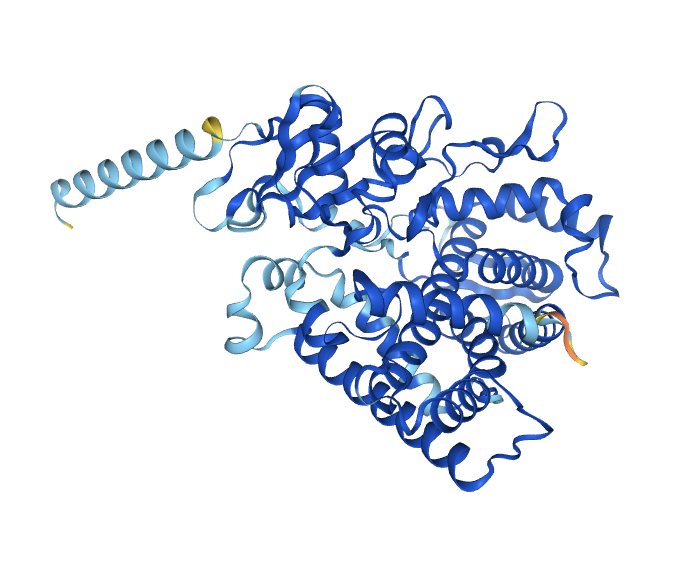

| GENE INFORMATION | ||
|---|---|---|
| Gene name | CYP2C8 |  |
| Description | Cytochrome P450 family 2 subfamily C member 8 | |
| Gene type | Protein coding gene | |
| Chromosome | 10 | |
| Cytoband | p23.33 | |
| Chromosome location(bp) | 95036772 - 95069497 | |
| Ensembl | ENSG00000138115 | |
| UniProt | P10632 | |
| PROTEIN FUNCTIONi |
|---|
| CYP2C8 catalyzes NADPH/O₂-dependent oxidation of diverse endogenous and exogenous compounds. It primarily epoxidizes polyunsaturated fatty acids (preferentially at the terminal double bond) and hydroxylates carbon-hydrogen bonds in various substrates. Key endogenous activities include metabolizing all-trans-retinoic acid to 4-hydroxyretinoate and performing 16α-hydroxylation of estrogens (estradiol/estrone). It is notably the major enzyme for xenobiotic metabolism, serving as the principal catalyst for the biotransformation of the anticancer drug paclitaxel (taxol) and numerous other therapeutic agents. |
NOTE: Gene expression values are scaled by log2(TPM+0.001).